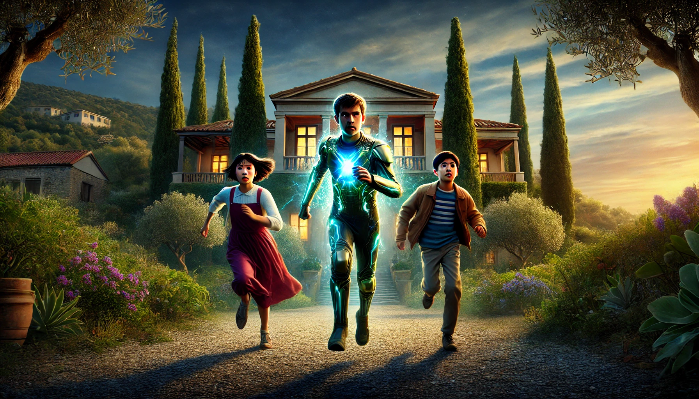

23. Dezember
Die Rettung der Kinder
Nach ihrer Rückkehr in Sicherheit erzählte Thea von den anderen Kindern in der Villa. „Da waren noch zwei Kinder,“ sagte sie. „Ein Junge und ein Mädchen, beide im Keller eingesperrt. Ich glaube, sie wussten nicht, ob die beiden Auserwählte sind, weil sie nicht mit ihnen reden können.“ Ihre Stimme zitterte bei der Erinnerung.
Hans runzelte die Stirn. „Das muss die Polizei übernehmen. Es ist zu gefährlich, da wieder reinzugehen.“ Carlos jedoch wirkte unruhig. „Und wenn die Sektenmitglieder jetzt wütend sind, weil wir Thea befreit haben? Was, wenn sie ihre Wut an den Kindern auslassen?“ Seine Sorge war deutlich zu sehen.
Johann hob den Kopf. „Ich gehe zurück.“ Die anderen schauten ihn überrascht an. „Was?“ fragte Maggy. „Ich schaffe das,“ sagte Johann entschlossen. „Es ist besser, wenn ich alleine gehe, weil der Schutzschirm für mehr als eine Person ohnehin schwierig wird.“
Die Gruppe schwieg einen Moment, bevor Carlos nickte. „Gut, aber wir müssen vorsichtig sein. Wir bleiben in der Nähe, falls etwas schiefgeht.“
Die Gruppe versteckte sich in sicherer Entfernung von der Villa, als plötzlich Schritte zu hören waren. Giorgio, einer der Sektenmitglieder, erschien und suchte offenbar nach Thea. Als er sie und Carlos entdeckte, versteifte sich die Gruppe. „Giorgio!“ flüsterte Carlos erschrocken, bereit, Thea zu schützen.
Doch Giorgio hob die Hände in einer beschwichtigenden Geste. „Wartet. Ich bin nicht hier, um euch zu schaden,“ sagte er. „Ich wurde auch erpresst. Sie haben mich gezwungen, für sie zu arbeiten, aber ich will mit all dem nichts zu tun haben.“
Carlos musterte ihn misstrauisch, doch Thea nickte. „Er hat mir nie etwas getan,“ sagte sie. Giorgio sah Carlos an. „Ich möchte helfen. Was kann ich tun?“
Nach kurzem Zögern erklärte Carlos ihm den Plan. Giorgio nickte und bewegte sich langsam in die entgegengesetzte Richtung. Kurz darauf rief er laut: „Ich glaube, ich habe Thea entdeckt! Sie ist hier entlanggelaufen!“ Ein Großteil der Sektenmitglieder rannte ihm hinterher, während die Villa fast unbewacht zurückblieb.
„Das ist deine Chance, Johann,“ flüsterte Carlos. Maggy ergriff Johanns Hand. „Denk dran, auf deine Fähigkeiten zu vertrauen,“ sagte sie ernst. Johann atmete tief durch, aktivierte den Unsichtbarkeitsmodus seines Anzugs und schlich sich in die Villa.
Die Villa wirkte still, doch Johann war wachsam. Er bewegte sich leise durch die Flure, aber er hatte einen entscheidenden Fehler gemacht: Nach dem Sprung aus dem Fenster am Vortag waren seine Schuhe noch immer matschig. Während er durch das Gebäude schlich, hinterließ er matschige Fußabdrücke auf dem Boden.
Eine der Wachen bemerkte die Spuren und rief Alarm aus. „Hier ist jemand! Alarm!“ Johann spürte, wie ihm das Herz bis zum Hals schlug. Innerhalb von Sekunden war er von Wachen umzingelt. Die Situation schien aussichtslos.
„Bleib ruhig,“ dachte er sich selbst zu. Doch die Panik wuchs in ihm. Instinktiv drückte er alle Knöpfe auf seinem Schutzanzug auf einmal. Plötzlich spürte er eine tiefe Ruhe in sich aufsteigen. Eine seltsame Klarheit erfüllte ihn. Er atmete tief ein und aus und konzentrierte sich. Bleibt stehen. Bleibt einfach stehen.
Zu seinem Erstaunen erstarrten die Wachen tatsächlich. Ihre Körper bewegten sich nicht mehr, als wären sie eingefroren. Johann schlich sich vorsichtig an ihnen vorbei und fand die Türen der beiden Kinder. Er deaktivierte den Unsichtbarkeitsmodus, damit die Kinder ihn sehen konnten, und öffnete beide Türen.
Ein Junge und ein Mädchen schauten ihn aus großen, verängstigten Augen an. „Kommt mit!“ sagte Johann leise. Sie zögerten einen Moment, bevor sie ihm folgten. „Schnell, wir müssen hier raus!“ Er führte sie zur Treppe, doch gerade als sie hinaufliefen, schien der Bann der Wachen zu brechen. „Da ist er!“ schrie einer. „Bleib stehen, oder ich schieße!“
Johann aktivierte sein Schutzschild und rannte, ohne zurückzublicken. Der Junge und das Mädchen folgten ihm dicht auf den Fersen. Schüsse hallten durch den Flur, prallten jedoch wirkungslos an dem Schutzschild ab.
Draußen warteten Carlos, Hans, Maggy und Thea nervös. Als sie Johann mit den beiden Kindern die Villa verlassen sahen, atmeten sie erleichtert auf. Die Polizei, die Hans und Carlos alarmiert hatten, war ebenfalls vor Ort. Sie stürmten die Villa und verhafteten die Verfolger.
Die beiden Kinder, Karim aus Afghanistan und Shi-Xu aus China, bedankten sich bei Johann. Shi-Xu sprach etwas Englisch und sagte: „Du hast uns gerettet. Danke.“ Karim verstand die Sprache nicht, nickte jedoch dankbar.
Carlos betrachtete die beiden und erklärte: „Es ist möglich, dass ihr beide, wie Johann und Thea, besondere Fähigkeiten habt, die ihr noch nicht nutzen könnt.“ Erstaunlicherweise hatten beide Kinder am selben Tag Geburtstag wie Johann und Thea.
Nach einer kurzen Verabschiedung wurden Karim und Shi-Xu der Polizei übergeben, die sicherstellen würde, dass sie zurück zu ihren Familien gebracht wurden. Die Gruppe machte sich auf den Heimweg.
„Willst du direkt nach Lissabon, Johann?“ fragte Carlos. „Oder möchtest du mit uns Weihnachten in Rom feiern? Deine Eltern sind selbstverständlich eingeladen.“ Johann lächelte. „Rom klingt perfekt,“ sagte er.
Was soll Johann tun?
- Nach Lissabon fahren
- Mit Carlos, Maggy, Thea, Hans und seinen Eltern Weihnachten in Rom feiern